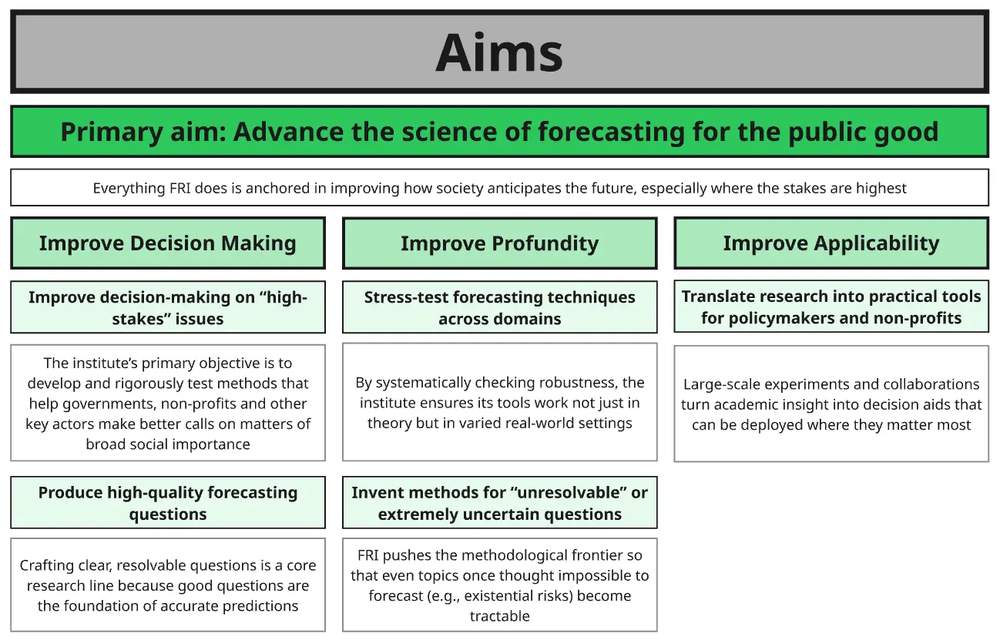
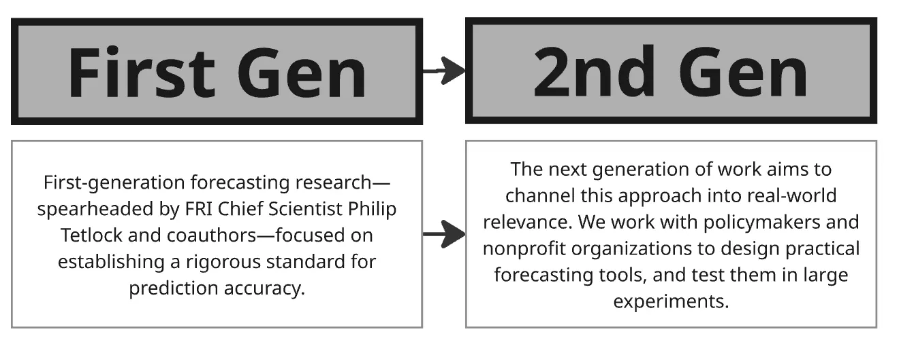
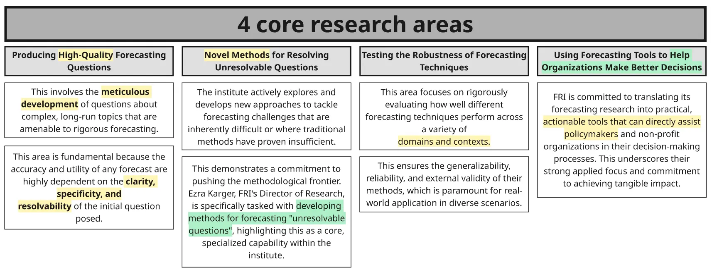
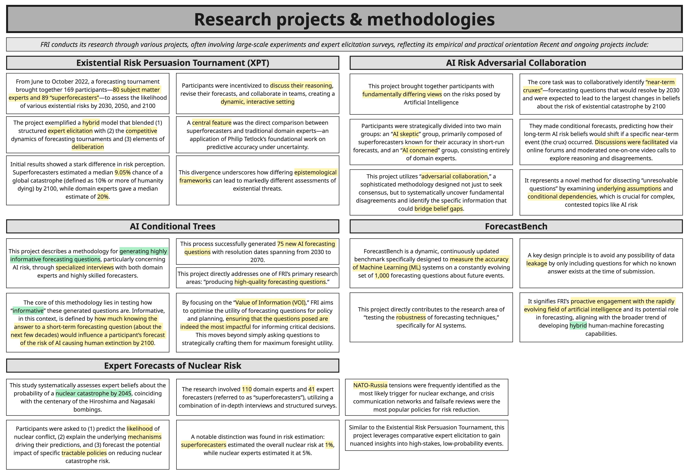
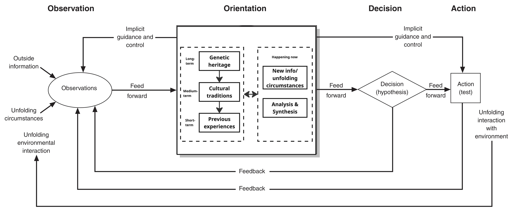
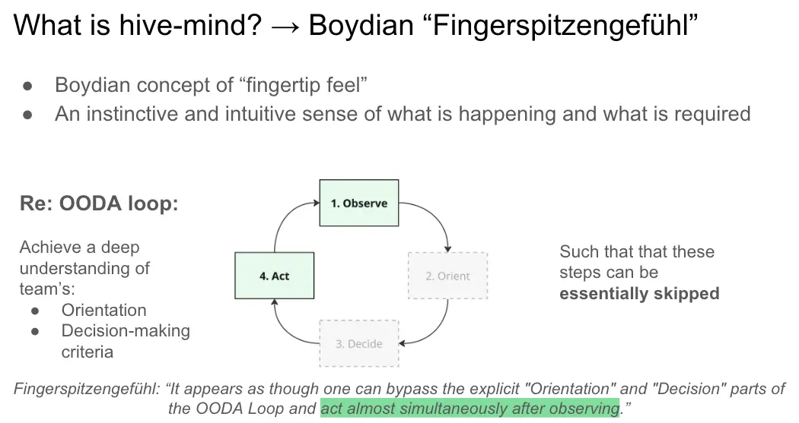

- 21st June 2025
- See also Why work for FRI
- And FRI (Parent Page)
Below is the result of 2 pomodoros worth of writing to check my model of FRI and why I’d be excited to work there
- So I found a job posting that I’d love to apply for, and have spent 3-5 poms per day for the last ~3 days orienting to it
- It’s one of Philip Tetlock’s orgs!! Dusted off my copy of Superforecasting in excitement
- What the role is, what FRI does, learning more about forecasting, etc
- After learning/orienting in a “bottom-up” way for a bit (reading deep research reports about forecasting, Philip Tetlock, etc), I want to switch to top-down, check my model, connecting the dots vibes
- I’ve got some nascent thought of like “the forecasting/superforecasting movement is the successor movement to what John Boyd started with his military briefings”, which I’m excited to think about more
1. Visual notes




2. My model
- Writing out what I know off the top of my head. No flashcards have been made yet - this is from reading & orienting by e.g. making a Miro board
What does FRI do?
- “Generation 1” of Philip Tetlock’s work was all about discovering what good forecasting involves?
- ~1984-2004 = first era of Tetlock’s career. Did studies that led to the “experts are about as good at predictions as a dart-throwing chimpanzee”, wrote first book from this (forget what it’s called, but it has a fox and a hedgehog on the cover I think, and I think is called something like “How much do experts know” or something)
- IARPA (US government defence agency (?) all about intelligence) worked with Tetlock to do ACE, a ~4 year tournament with ~6 teams. Some were intelligence officers with access to classified info, some weren’t.
- The profound thing was that Tetlock’s team (“Good Judgement… Team? Project?) outperformed the experts, overall they were like 30-60% better at forecasting
- How?
- Team work
- Fox mentality, Bayesian updating, etc
- Sophisticated algorithms to aggregate the “wisdom of the crowds” (extremising, weighing better forecasters higher, etc)
- Team member selection - they scooped up the top ~10% of talent each year to refine the team?
- How?
- After this, IARPA did another competition/project involving machine-human hybrid intelligence too
- Tetlock and the “good judgement team” formed “Good Judgement, Inc”, which I assume did consulting work
- Tetlock published “Superforecasting”
- Generation 2: refining the science of forecasting?
- Novel techniques, e.g. adversarial collaboration
- Testing across fields - ensuring that forecasting is applicable to wide range of fields
- Expanding the scope of what can be forecasted - figuring out how to break down intractable/impossible questions
- Helping governments, non-profits, policymakers
How this heavily rhymes with John Boyd
- I spent ~60 hours reading deeply into John Boyd, primarily through Frans Osinga’s book, and by doing iterative deep dives on Boydian zeitgeist topics like chaos theory, complexity theory, complex adaptive systems, systems theory, etc. (Just shallow deep dives to get a grounding in what he had a grounding in)
- Uncertainty is a key theme in Boyd. It first comes up as a primary topic in his paper “Destruction and Creation”. He was immersed in the epistemological changes of the ~1960s, where we went from a Decartes & Newton-inspired belief that everything is reducible and ultimately predictable, that the universe is a giant clock etc, Laplaces’ Demon etc, to a discovery of the limits of knowledge, and thus, uncertainty
- In Destruction and Creation, Boyd cites 3 core arguments/sources of uncertainty:
- Gödel’s Incompleteness Theorem → something akin to “a complete system must look to a larger/more complex/more abstract system, you cannot define a system using the elements of the system” → a drive to always be moving to higher levels of abstraction
- Heisenberg’s Uncertainty Principle → the closer we get to knowing {quantum physics thing 1}, the greater the uncertainty of {quantum physics thing 2}. In this example, it is impossible to know both at once. A fundamental example of uncertainty
- Oh god what’s the other one… let me ask ChatGPT (and make a new flashcard because I used to know all 3 easily). Ah that’s it, it’s the second law of thermodynamics - in a closed system, entropy increases to heat death. His point is that you have to have an open system, or else chaos (in this analogy, information) will increaseto the point of chaos. Another instance of “you have to look outside the system for answers”
- In Destruction and Creation, Boyd cites 3 core arguments/sources of uncertainty:
- But not just uncertainty → the OODA loop

- Orientation is the most important part of the OODA loop. Boyd called it “The Big O”.
- I had the sudden realisation that forecasting is the continuation of Boyd’s work
- Observation comes in
- could be a new thing to base a prediction on (e.g. you’re me and see the headline about Israel striking Iran and think “I know nothing about this, let me make some predictions)
- Or, it could be a new datapoint to use to update an existing prediction/forecast in a Bayesian way
- Orientation
- Outside view is one orientation you can take
- Inside view is another
- Perspective taking of other people is another orientation
- Scenario planning is another
- This is ALSO, I realised the other day on a walk, the same as John Vervaeke’s “Perspectival Knowing”, of the 4 kinds of knowing (Participatory, Perspectival, Procedural, Propositional). Taking different perspectives changes your salience landscape, changes what info is foregrounded, which is super useful
- Decision/action → choosing your credence, choosing your prediction
- Observation comes in
Therefore - super excited to think about forecasting as the heir of Boyd
- I love Boyd
- The neo-Darwinian revolution → survival of the best informed. Post-modern, 4th generation warfare (?) is all about intelligence, “getting inside your opponent’s decision cycle”, rapid OODA looping, outpacing opponent
- Fingerspitzengefuhl:

- Forecasting as a way to empirically test the accuracy of your model. To OODA loop rapidly, to take in new info, adjust your predictions via Bayesian updating. Empirical Boydianism, for civilians
- Because Boyd’s stuff is very military focused, very zero sum game, and also fairly niche/unknown. Vs superforecasting, and now the whole community/industry around it, has taken off.
Survival of the best informed
- Forecasting is vital for things like:
- X-risk → getting superforecasters and domain experts to create the best maps of the territory. Well validated and well reasoned models of e.g. p(doom) from various x-risks → policymakers, governments, charities can be better informed re: priorities, funding, etc. Can discover key cruxes, key conditional probabilities (“if this happens, p(doom) from this x-risk will dramatically increase), very useful for prioritisation and response.
- Predicting the shape of the world. Wars, economies, impact of policies, etc. Improving our foresight. “Survival of the best informed” → having higher resolution, further-reaching, further-seeing maps = more informed choices
What are FRI doing?
- Expanding the possibility-space of what can be forecasted
- Some things may seem intractable, impossible to forecast. Breakthroughs here could be very impactful, expanding our scope, our ability to preemptively react, to reduce risk, increase chance of survival
- Uncovering the causes of divergent maths, and moving towards more unified maps
- E.g., AI pessimistic superforecasters vs AI optimistic forecasters, discover the core cruxes, adversarial collaboration, get closer to a “truth”, a more realistic map of the territory
Territory, map, noise, truth
- There is a territory out there. The AI industry, for example, is currently progressing - there are x big players with budgets of >y$/year, working to advance the state of the art
- There are various maps. E/acc people have one cluster of maps, AI safety people have another cluster, etc
- There is a huge amount of noise out there. AI hype, AI detractors, people who think we’ll be dead in <2 years, <5, etc. There’s not much consensus (maybe there’s far more consensus amongst the better-informed)
- There is something like truth out there. There are currently certain companies, certain research groups, certain research approaches, that are particularly high leverage. There are certain conditional probabilities where “if this breakthrough happens, risk increases a lot”
- Identifying the high-leverage things, and having accurate maps that point to real territories, with no blank regions on the maps (although in the case of AI, I suppose this is complicated by emergent properties!)
FRI = advancing the science of map making
- Get a better model of the real territory
- Get better maps of this territory, minimising things like: unknowns, surprise
- Decrease epistemic uncertainty via more knowledge (more observations), and also better orientation to that knowledge
- (There will still be aleatory/stochastic uncertainty)
- Give better predictions of things (risk of AI doom, risk of war)
- Give decision-makers better information, let them make better informed decisions
- Better actions
- Less waste